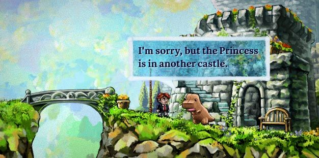

Llevo tiempo tratando de encontrar la manera perfecta o el juego ideal para lograr introducir a una persona en el mundo de los videojuegos. En ocasiones me topo con una mirada y en ella su deseo por intentar probar alguna experiencia fuera del ya clásico Mario, o Angry Birds. Me emociona mostrarle o platicarle a dicha persona sobre esas otras experiencias que sé, le pueden gustar, no sin antes preguntarle sus gustos, un ejemplo sería: la fantasía, la ciencia ficción, deportes, acción, qué tipo de películas prefiere, entre otros datos; ya con esta información es posible platicar sobre ese juego que puede deleitar su gusto y, obvio, preguntar si tiene alguna experiencia previa. Esos pueden ser los movimientos en este tablero que nos permitan una mejor ofensiva para “coronar” a esa persona en este bonito universo en expansión.
¿Lo negativo en esto qué es?
La mayoría de las y los videojugadores no saben compartir su experiencia y llevan a los nuevos y posibles consumidores a juegos con mecánicas complicadas y que necesitan más inmersión, situación que puede abrumar a este ser, alejándolo definitivamente de este medio.
¿Cómo evitar esta tragedia y un poco de pasado?
La llegada del Wii trajo consigo un nuevo mercado y fomentó la creación del juego casual, aquél destinado a entretener y entregar una experiencia simple (favor de no malinterpretar, lo simple también tiene otro tipo de complejidad), conceder experiencias dinámicas enfocadas a entretener a un grupo de personas que en su vida habían tocado un videojuego. Nintendo con su 3Ds y Wii logra un equilibrio perfecto al acercar a un nuevo tipo de consumidores, que con el tiempo pide experiencias más complejas, es decir, inició con un demo llamado WiiSports, atractivo y simple pero que unía a familia, amigos y parejas por su fácil uso y manejo de mecánicas, sin que el usuario se percatara de las herramientas con las cuales se favorecía y podían hacerlo tomar un juego como Twilight Princess y no sentirse ajeno o torpe con la aventura que le esperaba; esto permitió un flujo nuevo de personas que si lo deseaban seguirían consumiendo juegos y con ello podrían vivir diferentes experiencias.
¿Qué sucedió?
El mercado creció y las compañías buscaron atraer a este nuevo consumidor ofreciendo modalidades de juego como Kinect y Move, otras explotaron la cultura pop con juegos como Rock Band y Guitar Hero entre otras cosas, que no hicieron más que ahogar un medio y perder rumbo frente a la innovación, innovación que sucedía en otro tipo de juegos pero ya no tan atractivos para este consumidor que necesita una mayor curva de aprendizaje. Entregas populares como Call of Duty, Gears of War o Halo, tienen un buen diseño en sus primeras entregas para dar al usuario un aprendizaje pleno, pero en sus secuelas esta curva va dirigida al jugador experimentado y no es tan amigable con un principiante.

Los juegos con mecánicas que no tardas mucho en dominar y con una excelente narrativa son los mejores embajadores para atraer a estar personas inquietas por buenas experiencias. Braid y Journey son excelentes exponentes de lo que es un videojuego, logrando mantener la atención y curiosidad sin importar la experiencia del usuario. Son estos elementos lo que más se deben cuidar al momento de atraer a alguien hacia este mundo: es darles la oportunidad de catar por sí mismos toda la algarabía presente y así esta experiencia probablemente les entregue ese algo más que buscan cuando se presenta en un entorno enteramente contemplativo.
Así ellos obtendrán aquellas sensaciones que se dan como cuando se toma un buen café o se degusta un buen vino.